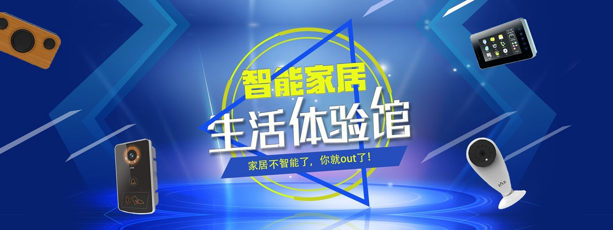
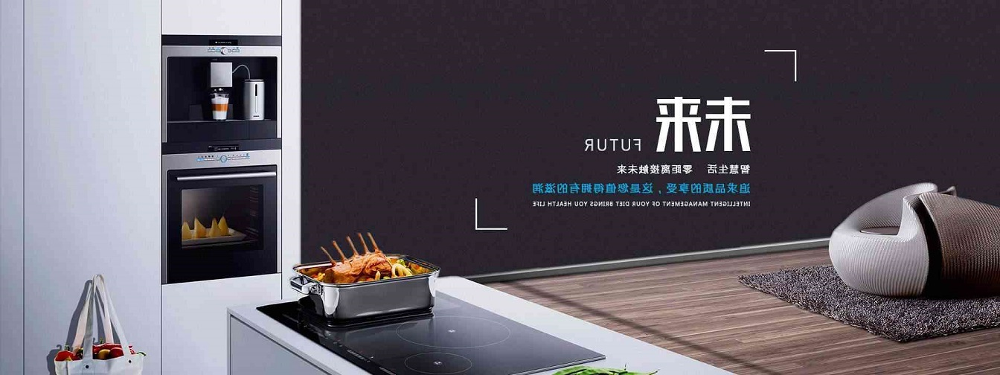
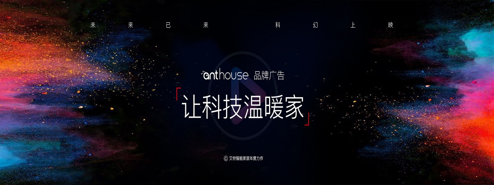
热门产品
全部产品><
-
智能机器人
- 在钢筋水泥的都市生活中，养一只宠物一只
- 宠物可以给你带来一些压，力释放对于铲屎
- 官来说宠物俨然成为家庭中的一员，每天出
- 门上班都会觉得非常不安因为要把自家爱宠
- 单独留在家里。这不仅会带来很大的压力，
- 也会让人感到内疚，总在想：他们还好吗，
- 他们会想我吗，会不会发生什么不好的事？
- 如果周末要工作或是和朋友聚会，估计更会
- 「负罪感」爆棚。在物联网发达的今天，宠
- 物保姆 Pebby 的出现，不仅能够让你实时
- 看到它的萌态，还能让你远程陪你家主子玩
- 耍。这款产品支持 Wi-Fi 和蓝牙连接，内置
- 了摄像头允许你通过App远程观看、交互，
- 并实时捕获宠物的快乐时刻。
X
-
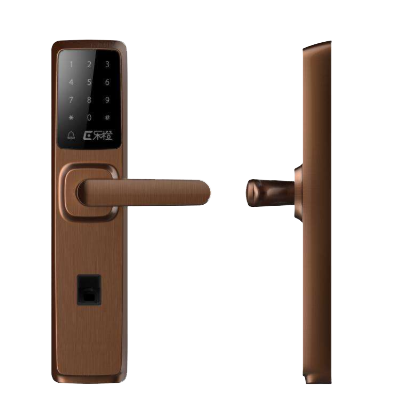
金刚智能云锁
- 新一代智能锁综合应用了移动互联网技术、
- 云技术、智能手机技术、生物识别技术、电
- 子信息的加解密及认证技术，它是通过一个
- 安全系统工程来解决开锁与管理的问题。云
- 锁的技术比较综合、比较复杂、安全要求更
- 高。随着人工智能技术的开发，人工智能技
- 术在新一代智能锁的应用会更加普遍，智能
- 锁的功能将更加强大，安全性能会更高。也
- 「就是说新一代智能锁的技术开发就象智能
- 家居一样才刚刚开始，未来的前景非常的宽
- 阔看到它的萌态，还能让你远程陪你家主子
- 玩。而传统智能锁的技术远远落后于智能时
- 代的要求，就象智能手机替代键盘式手机一
- 样。
X
-
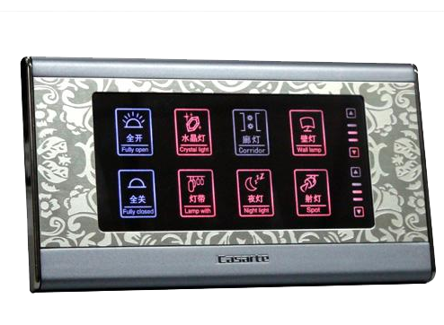
智能面板
- 智能开关是指利用控制板和电子元器件的组
- 合及编程，以实现电路智能开关控制的单元
- 。开关控制又称BANG-BANG控制，由于
- 这种控制方式简单且易于实现，因此在许多
- 家用电器和照明灯具的控制中被采用。但常
- 规的开关控制难以满足进一步提高控制精度
- 和节能的要求。常规的开关控制方式在控制
- 周期内，其控制量只有二个状态，要么接通
- ，为一个固定常数值、要么断开，控制量为
- 零，这样固定不变的控制模式缺乏人工开关
- 控制的特点，人工开关控制过程中，人要根
- 据误差及误差变化趋势来来选择不同的开关
- 控制策略，例如在一个控制周期T内，控制
- 量输出的时间根据需要是可调的。
X
-
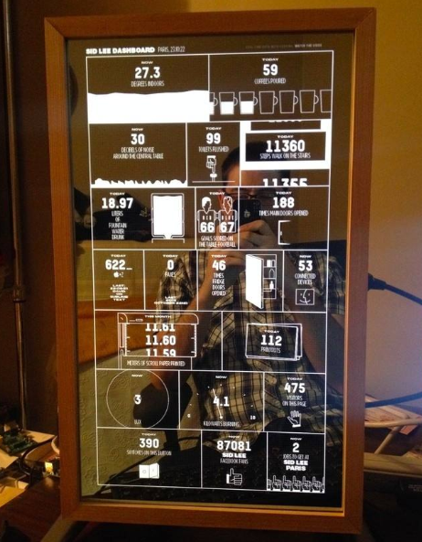
智能墨镜
- 完美的光学水晶镜面决定了她出色的表现。
- 智能魔镜采用NPS镜面显示技术，在能够
- 像普通高清显示屏那样显示画面的同时，看
- 上去就像一块镜子，这令其能够更好地与家
- 居环境融为一体。光号魔镜的核心部分，通
- 过不同的面板和光源，进行不同反射和折射
- 调节，以达到完美的效果。奢华生活，从镜
- 开始实体与科技的完美结合，轻轻一触打开
- 新世界智能魔镜的嵌入，打破了传统镜子的
- 作用，时尚科技的界面，满足你对生活的全
- 部想象。正东智能健康魔镜，将Andreid
- 智能设备与传统镜子有机结合，可以在智能
- 健康魔镜上实现触摸功能，音乐播放功能，
- 视频新闻播放功能，随心所欲！
X
-
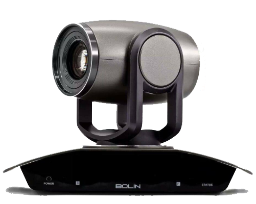
官网云台摄像机
- 独特的网管功能,能随时监测设备状态,自
- 动告警和定位,可用于科研监测,森林防火
- ,平安城市,电力监测,智能交通等监测监
- 控行业高精度云台,定位精度高达0.01
- 度,可根据客户要求定制各类高精度云台,
- 转台,高精度伺服跟踪系统, TEl:采用全
- 金属结构外壳，防腐，防尘，防撞击；云台
- 采用全天候环境设计，带遮阳罩，带雨刷；
- 采用200万像素的全高清网络智能摄像机
- 机芯；支持20倍光学变焦；支持人脸识别
- 和自动抓拍功能；支持自动跟踪动人或车辆
- 功能；支持软件防抖功能；
X
-
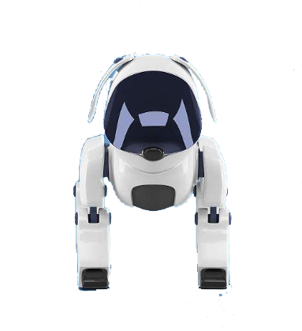
宠物机器人
- 宠物机器人拥有指纹、密码、磁卡、
- APP、钥匙，五大开锁方式，任君挑选。
- 指纹开锁：采用瑞典FPC半导体指纹采集
- 器，共可录入100枚指纹，应用生物活体
- 指纹识别技术，感应灵敏，老人小孩指纹
- 都能有效识别。密码开锁：艾特智能特有的
- 虚位密码开锁技术，无论在正确密码之前、
- 之后有多少位数，只要中间有连续正确的密
- 码，就能解锁，有效防止别人窥探
X
-
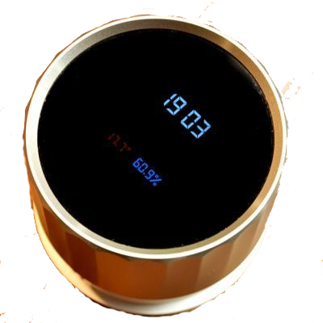
icoo智能管家
- 人工智能 LivingLab智能家居 知名
- 品牌 加盟无忧 与您共建智慧城市!无线智能
- 开关智能家居专利产品 千余个大型成功案例
- 生产研发行业大品牌!智能型开关柜从形式
- 上可分为配电型、电动机控制型及其它控制
- 功能型。配电型以智能断路器为核心器件，
- 由上位计算机实现对配电回路的遥控他、遥
- 测、遥信及遥调，而电动机控制型是以变频器
- 、智能电动机控制器为核心器件，实现电动机
- 起动、运行、停止的优化控制。其它控制型的
- 智能开关柜是以PLC(可编程控制器)为核心
- 的控制型开关柜，完成生产过程中的各类控制
- 功能，也是应用于工业生产过程自动控制发展
- 是实现对普通型开关柜智能有效措施。
X
-
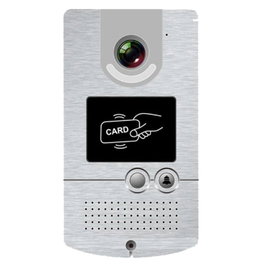
智能别墅门口机
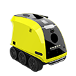- 以艾特智能研发的“别墅门口机”为例，它
- 内置100万像素宽屏动态摄像头，可以12
- 0°进行高清摄像，在光线变暗的情况下，
- 别墅门口机的红外灯将自动开启补光模式，
- 此时画面光线均匀，人物图像色彩信息齐
- 全，确保来访者图像特征清晰可辨。此外，
- 全天任何时间，家门外有任何异动情况，
- 它都会一一记录“太空铝机身，一体化密
- 封设计，可防水、防尘、防锈；钢化玻璃外
- 表，易清洁打理；全新触摸按键，反应灵敏
- 高清摄像头，自动补光灯，黑夜中也能一目
- 了然；高清屏幕显示，画质流畅清晰；产品
- 通过公安部技防检测，安全可靠。用户也可
- 通过刷卡开锁，使用非常简单便捷。
X
>
about us
关于我们
智能家居公司通过物联网、云计算、语音识别、人工智能技术，连接家庭电工产品、暖通舒适设备、安全和影音等系统，构建互联互通的家庭物联网，入选国家新型信息消费示范项目，为全球消费者创造智慧生活。智能家居公司通过物联网、云计算、语音识别、人工智能技术，连接家庭电工产品、暖通舒适设备、安全和影音等系统，构建互联互通的家庭物联网，入选国家新型信息消费示范项目，为全球消费者创造智慧生活。通过持续的研发大投入与技术创新，实现美好生活（家庭、酒店、办公、养老）的全面智能化，为用户创造更方便、更快捷、更舒适、更安全、更健康、更聪明、可持续发展的居住环境。
案例展示
-

- 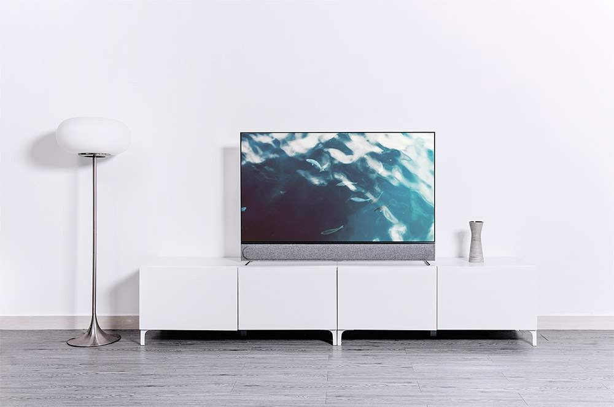
- 智慧家庭
- 未来智慧生活独创一种新的生活方式，在家庭场景功能融合、增值服务挖掘的指导思想下，采用主流的互联网通信渠道，配合丰富的智能家居产品终端，构
-
-
- 智慧办公
- 未来智慧办公利用云计算技术对办公业务所需的软硬件设备进行智能化管理，实现企业应用软件统一部署与交付的新型办公模式
-
-
- 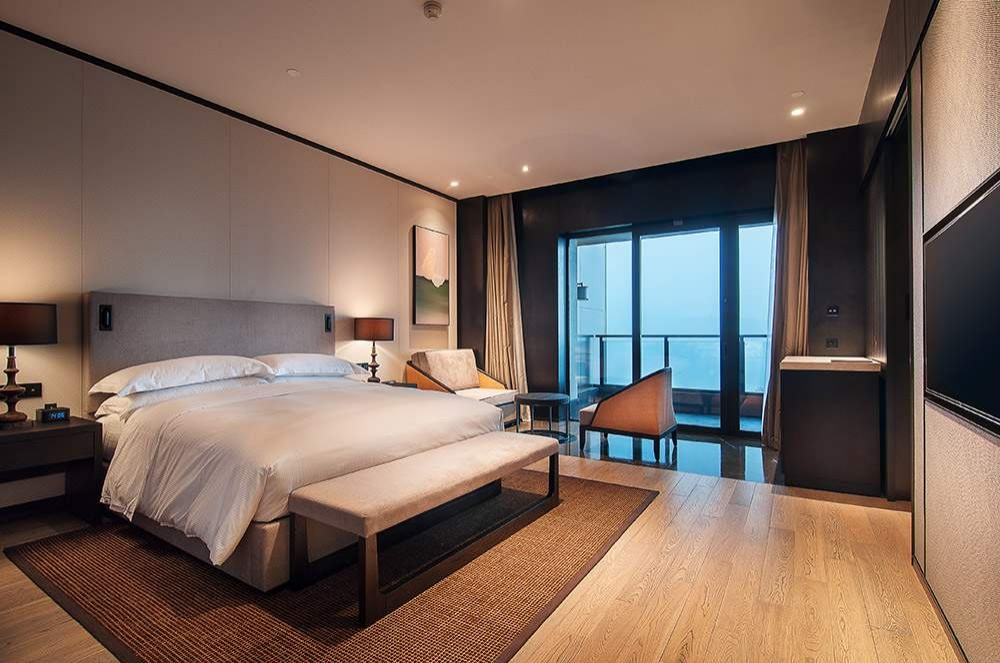
- 智慧酒店
- 未来智慧酒店拥有一套完善的智能化体系，通过数字化与网络化实现酒店数字信息化服务技术
-
-
- 智慧教育
- 未来智慧教育在教育领域（教育管理、教育教学和教育科研）全面深入地运用现代信息技术来促进教育改革与发展。其技术特点是数字化、网络化、智能化和多媒体化，基本特征是开放、共享、交互、协作。以教育信息化促进教育现代化，用信息技术改变传统模式。
-
-
- 智慧养老
- 未来智慧养老是面向居家老人、社区及养老机构的传感网系统与信息平台，并在此基础上提供实时、快捷、高效、低成本的，物联化、互联化、智能化的养老服务。
-
最新资讯
news-
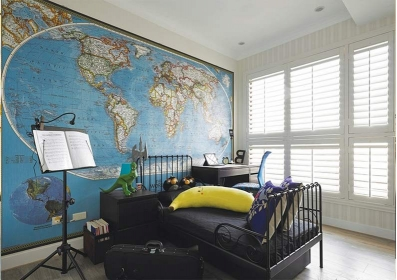Q：有人问我，智能家居有什么用？
A：很多人说智能家居是锦上添花，可用可不用。的确，就像是智能手机，可用可不用。但智能化产品会给你生活提供更加安全舒适的生活体验。首先，长沙智能家居智能家居的小编我先带大家了解一下，智能家居的几大系统。智能家居 -
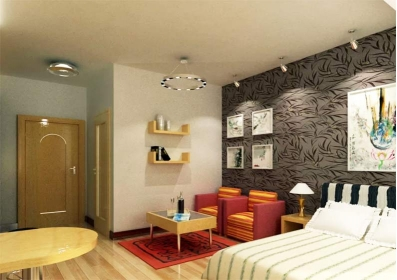随着智能家居的火热，越来越多的人会选择安装智能家居，不过，由于家庭多样复杂化，在实际选择中，很多人并不清楚打开智能家居的正确姿势，特别是行业新手和想安装智能家居又不得其法的用户。今天，我们智飞智能家居的小编，就来和您唠一唠，我们经过大批量的
-
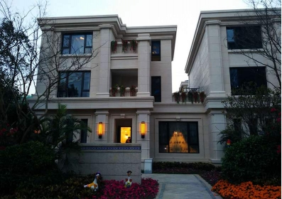基本介绍物联网在中国迅速崛起得益于我国在物联网方面的几大优势。第一，我国早在1999年就启动了物联网核心传感网技术研究，研发水平处于世界前列；第二，在世界传感网领域，我国是标准主导国之一，专利拥有量高；第三，我国是能够实现物联网完整产业链的